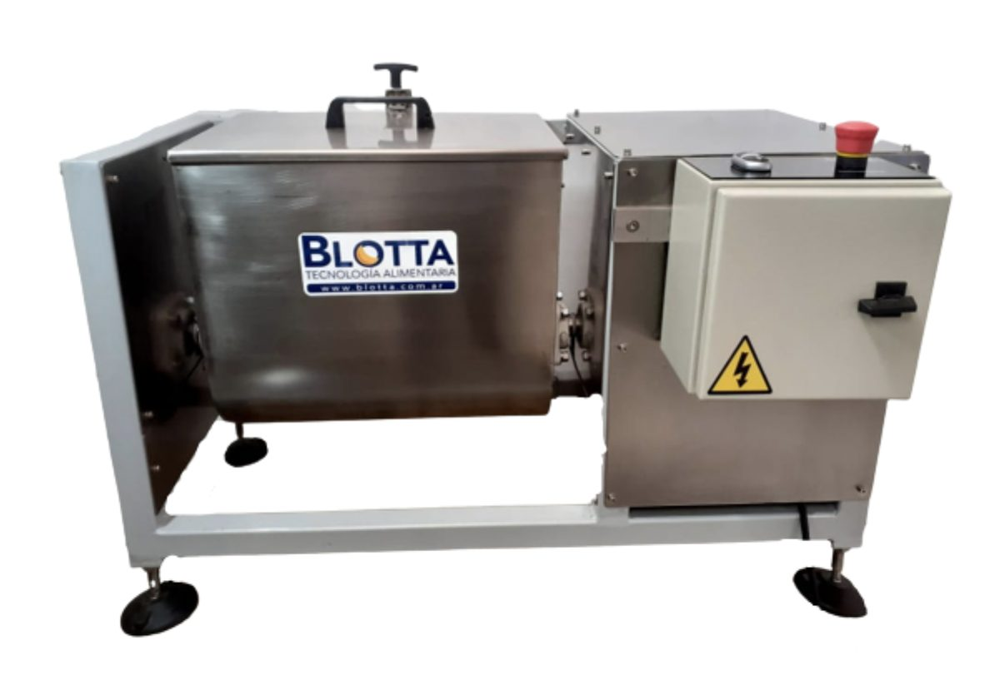
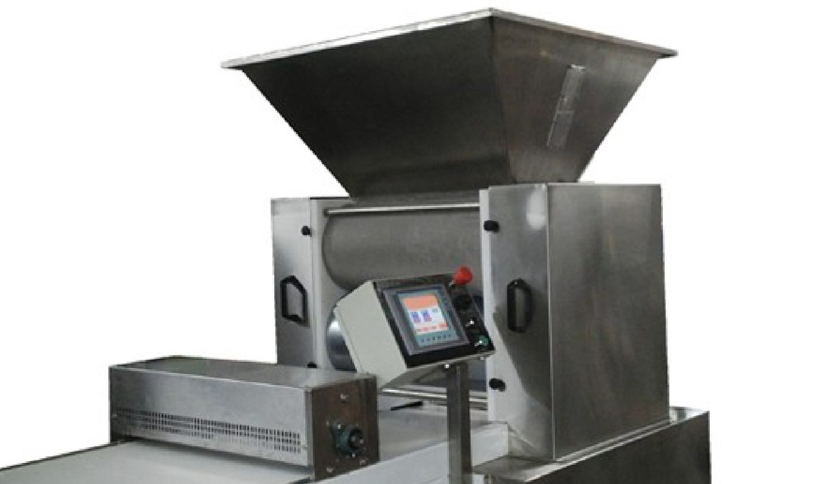
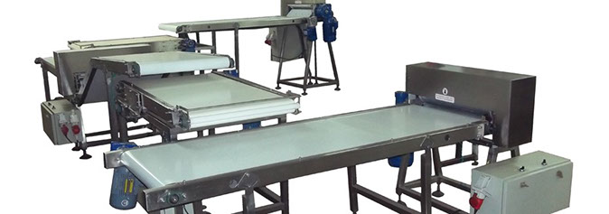
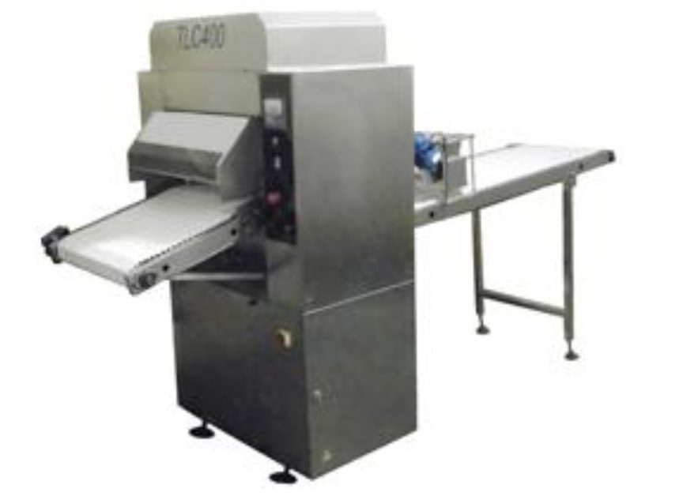
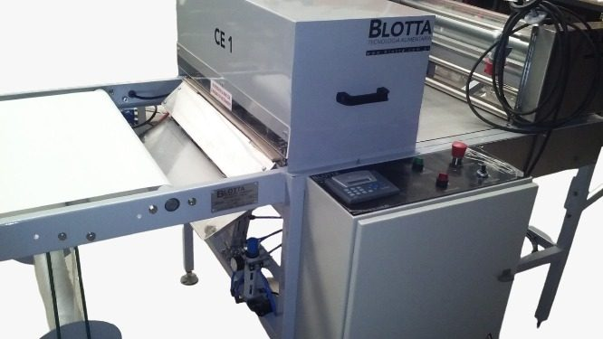
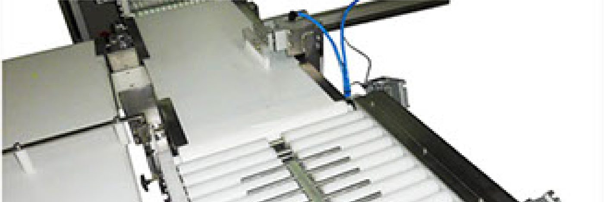
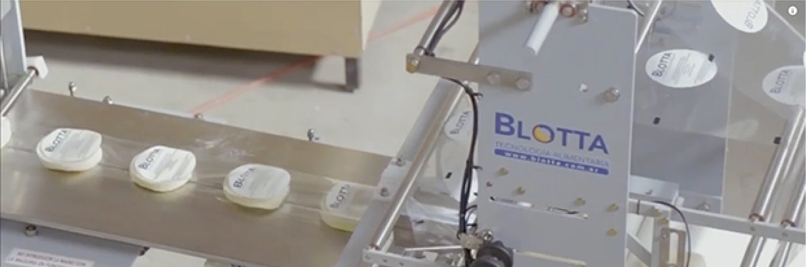

Guía gratuita para productores
De la producción manual a la industrial
Cómo saber cuándo automatizar, qué máquina necesitás para cada etapa y qué tener en cuenta antes de invertir.
Blotta – Tecnología Alimentaria · Rosario, Argentina · Desde 1995
Qué vas a encontrar
- ¿Llegó el momento de automatizar?
- El proceso completo, etapa por etapa
- ¿Tapas o empanadas? Elegí según tu producto
- Cuánto podés producir con cada equipo
- Checklist antes de comprar
- Cómo te acompaña Blotta
Para quién es esta guía
Para fábricas de alimentos, rotiserías y franquicias que hoy producen empanadas, tapas o masas a mano (o con equipos sueltos) y quieren crecer sin perder la calidad ni el sabor de su receta.
La escribimos con más de 30 años de experiencia diseñando y fabricando maquinaria para la industria alimentaria en Rosario.
Guía Blotta para productores2
01 · ¿Llegó el momento de automatizar?
Automatizar no es solo producir más rápido. Es producir siempre igual: el mismo peso, la misma forma y la misma calidad en cada unidad, sin depender del cansancio o la experiencia de cada persona.
Señales de que tu producción manual llegó a su techo
- Rechazás pedidos (o tardás en entregarlos) porque no das abasto.
- El peso y el tamaño de cada unidad varían según quién la hizo.
- Sumar personal ya no aumenta la producción en la misma proporción.
- Querés vender a cadenas, franquicias o exportar, y te piden volumen y peso exacto.
- Tu equipo pasa buena parte del día en tareas repetitivas como cortar discos o harinar la masa.
Lo que gana tu planta
- Volumen sostenido: producción continua, turno tras turno.
- Peso exacto: dosificación y control de peso automáticos, con descarte de las unidades fuera de rango.
- Menos costos: menos desperdicio de masa, harina y film de envasado.
- Más seguridad e higiene: acero inoxidable, paradas de emergencia y menos manipulación del alimento.
Consejo: no hace falta automatizar todo de una vez. Los equipos Blotta son modulares, así que podés empezar por la etapa que hoy es tu cuello de botella y sumar el resto a medida que crecés.
Guía Blotta para productores3
02 · El proceso, etapa por etapa
Así se arma una línea industrial completa. Cada etapa tiene su equipo; podés tenerlos todos o solo los que necesites.
1Mezclado
Mezcladoras con dosificación automática de harina y agua. Modelos de 25 kg cada 15 min hasta 1.500 kg/h.

2Formado de la hoja
El formador convierte la masa (y los recortes) en una lámina lisa de 600 mm. Hasta 3.600 kg/h.

3Cruzado
El cruzador pliega la masa dos veces para darle más liga y elasticidad.

4Laminado y harinado
Módulos de laminación llevan la masa al espesor exacto; el harinador espolvorea harina pareja, sin nubes.

5Corte o conformado
Cortadoras de tapas (discos apilados con separador) o conformadoras que arman la empanada completa.

6Control de peso
El módulo de pesaje descarta automáticamente las unidades fuera del rango programado.

7Envasado
Envasadora flow pack: solo funciona cuando detecta producto, así no desperdicia film.

Guía Blotta para productores4
03 · ¿Tapas o empanadas?
La primera decisión es qué vendés, porque define el corazón de tu línea.
Si vendés tapas (discos para empanadas o tartas)
Tu equipo central es una cortadora de láminas. Corta cada disco con su separador y los apila en la cantidad que programes, listos para envasar. Los cabezales se cambian para diámetros de 80 a 320 mm, y el sobrante de masa y film se separa solo.
Es el invento que dio origen a Blotta: Claudio Blotta desarrolló la máquina para cortar discos de empanadas con separadores individuales.
Si vendés empanadas armadas
Tu equipo central es una conformadora. Trabaja directo sobre la lámina, sin cortar discos antes: calibra la masa, dosifica el relleno, dobla, estampa y corta. Los cabezales se cambian para distintos tamaños y formas.
Antes de decidir, respondé estas preguntas
- ¿Cuántas unidades (o docenas) necesitás por hora hoy? ¿Y dentro de dos años?
- ¿Cuántos formatos o tamaños distintos producís?
- ¿Tus rellenos son cremosos, húmedos o con trozos?
- ¿Vendés fresco, congelado o envasado para góndola?
Con esas respuestas, un asesor de Blotta puede recomendarte la configuración justa para tu volumen y tu receta.
Guía Blotta para productores5
04 · Cuánto podés producir
Producción aproximada de cada equipo según el catálogo Blotta. Los valores reales dependen de las características de tu producto.
| Equipo | Modelos | Producción aproximada |
|---|
| Cortadora de tapas | CE1 (emprendedores) | 500 docenas/h |
| CCS1 · CCS2 (con film) | 800 a 2.000 docenas/h |
| RT (sin film) | 2.000 a 4.000 docenas/h |
| Conformadora de empanadas | MCE1 · MCE2 | 2.000 a 4.000 unidades/h |
| Formador de hoja | FH200 · FH600 | 800 a 3.600 kg/h |
| Mezcladora | M25 a MZ1500 | 25 kg cada 15 min a 1.500 kg/h |
| Envasadora flow pack | — | unos 45 paquetes/min (producto de 125 mm) |
Cómo leer la tabla
Elegí el equipo central por tu meta de producción, no por tu volumen de hoy: una máquina que trabaja siempre al límite se desgasta más y no te deja crecer. Después, el resto de la línea (mezcla, laminado, envasado) se dimensiona para acompañar a ese equipo central.
Guía Blotta para productores6
05 · Checklist antes de comprar
Repasá esta lista antes de pedir tu presupuesto. Te va a ahorrar tiempo y sorpresas.
Instalación
- Energía trifásica: los equipos industriales Blotta son trifásicos. Confirmá que tu planta la tenga o consultá con un electricista.
- Aire comprimido: varios equipos (conformadoras, cortadoras, pesaje) usan cilindros neumáticos.
- Espacio: medí el lugar, incluyendo circulación para operarios, limpieza y carga de masa.
Producto y proceso
- Tenés definida tu receta de masa y tus rellenos (la máquina se ajusta a tu producto).
- Sabés tus formatos: diámetros de tapa, tamaños y formas de empanada.
- Pensaste cómo vas a envasar y conservar (fresco, congelado, flow pack).
Equipo y respaldo
- Hay una persona responsable de la máquina en cada turno.
- Está prevista la capacitación de los operarios en la puesta en marcha.
- Sabés a quién llamar para soporte técnico y repuestos.
- Tenés un plan de limpieza diaria acorde a las buenas prácticas de manufactura.
Guía Blotta para productores7